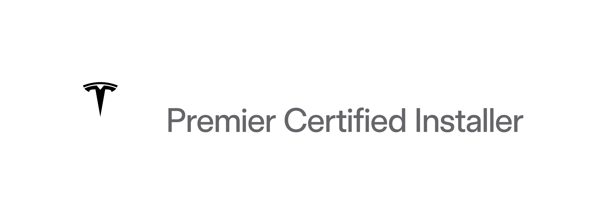

¿TIENES UNAPOWERWALL?
Tu batería puede generarte dinero mientras ayuda a Puerto Rico.
Virtual Power Plant
MILES DEBATERÍAS,UNA REDMÁS FUERTE.
El VPP de Tesla + LUMA conecta tu Powerwall con muchas más para apoyar la red.
PASO 1
LUMA ACTIVAUN EVENTO
Cuando la red necesita apoyo en horas de alta demanda.
PASO 2
TU POWERWALLAPORTA ENERGÍA
Automáticamente.
Tú decides cuánta compartir.
Tú decides cuánta compartir.
PASO 3 · GANAS
hasta$1,000al año por batería
Clientes ya generan alrededor de $1,000 al año por Powerwall. Mientras más aportas a la red, más generas.
TU RESPALDOSIEMPRE PROTEGIDO
Tú tienes el control.
Tesla lo gestiona solo.
Tesla lo gestiona solo.
CON WINDMAR,SIEMPRE GANAS


Solar · Batería · Tu energía, tu control